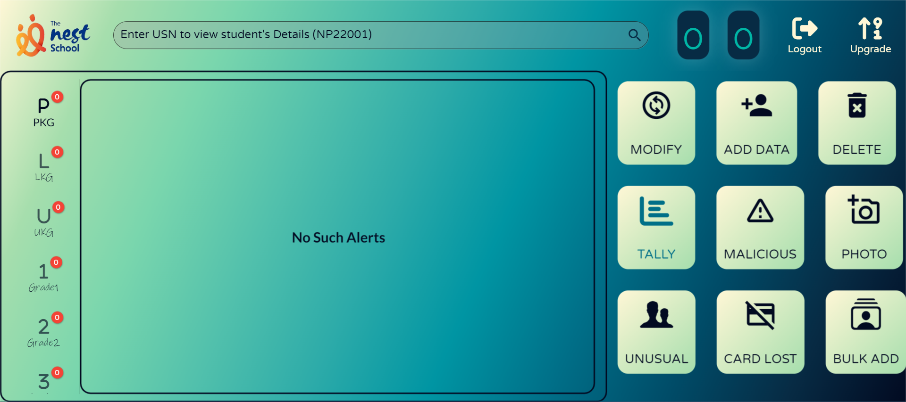
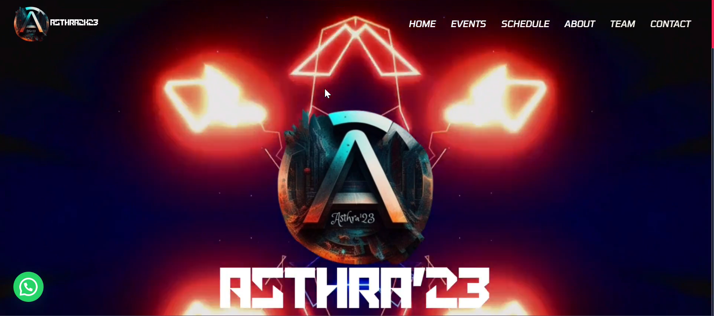

GATEWAY AUTHENTICATION SYSTEM

❖ It is a standard gateway system to ensure safe entry and exit of the school pupil.
❖ The system has two ends: the User end and the Admin end.
❖ The Admin end has the database of the students and all other processing features.
❖ The User end is an abstracted form of Admin end which contains the features of scanning, viewing tally and unusual pickups.
❖ The frontend of the applications were developed using Flutter and the backend linked to Firebase.
ASTHRA'23 SYMPOSIUM WEBSITE

❖ This is a website that would describe the symposium and also the time schedule of all the events.
❖ It incorporates event descriptions, official sponsors, and also about college management.
❖ For queries, a contact form was also enabled.
❖ This website was developed using WordPress.